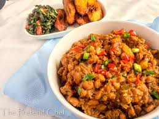

Gerose Bites Menu
Appetizers

- Bruschetta: Grilled bread topped with fresh tomatoes, garlic, and basil.
- Stuffed Mushrooms: Mushrooms filled with a savory mixture of cheese and herbs.
- Garlic Shrimp: Shrimp sautéed in garlic butter with a touch of lemon.
Main Courses
- Jollof Rice:We prepare the best Nigerian jollof there is with best Nigerian spices.

- Soup: We serve a variety of Nigerian soups, naturally prepared


- Beans:The beans porridge we serve at Gerose is second to none.

Desserts
- Cheesecake: Classic cheesecake with a graham cracker crust and a hint of vanilla.

- Chocolate Lava Cake: Rich chocolate cake with a molten chocolate center.

- Tiramisu: Italian dessert made with layers of coffee-soaked ladyfingers and mascarpone cheese.

Contact Us